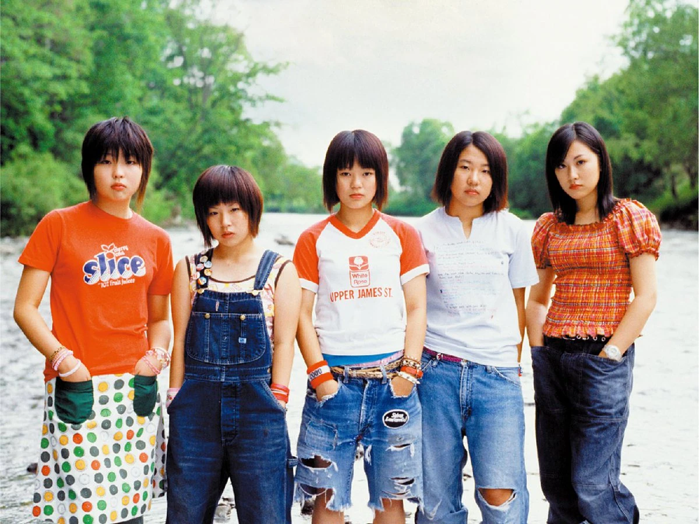

City-Pop
ประวัติและความเป็นมาคล่าวๆของแนวเพลงญี่ปุ่นและประของศิลปินตัวอย่าง
City-Pop


City-Pop
ซิตี้ป็อป (City Pop)
ซิตี้ป๊อป( ญี่ปุ่น :シティ・ポップ, Hepburn : shiti poppu )เป็นดนตรีป๊อปญี่ปุ่นที่มีคำจำกัดความคลุมเครือ เกิดขึ้นในช่วงปลายทศวรรษ 1970 และได้รับความนิยมสูงสุดในช่วงทศวรรษ 1980 [ 9 ] เดิมทีมันถูกเรียกว่าเป็นสาขาของ " ดนตรีใหม่ " ที่ได้รับอิทธิพลจากตะวันตกของญี่ปุ่นแต่ต่อมาได้รวมเอาสไตล์ต่างๆ ไว้ด้วยกัน — รวมถึงฟังก์ , ดิสโก้ , อาร์แอนด์บี , AOR , ซอฟต์ร็อกและบูกี — ซึ่งเชื่อมโยงกับ ความเฟื่องฟูทางเศรษฐกิจและชนชั้นสูงของญี่ปุ่นที่กำลังเริ่มต้นมันถูกระบุด้วยเทคโนโลยีใหม่ๆ เช่นวอล์กแมน รถยนต์ที่มี เครื่องเล่นเทปคาสเซ็ตในตัวและสเตอริโอ FMและเครื่องดนตรีอิเล็กทรอนิกส์ต่างๆ